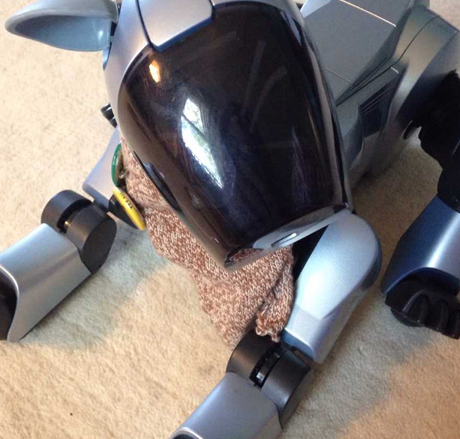
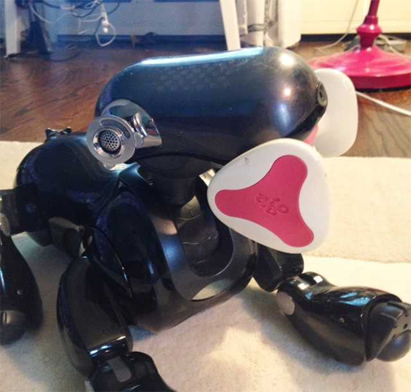

Former visitor
Ball-head was leant to me in winter of 2016 to aid in a project- AIBO THERAPY, a program to clear dust out of the potentiometers of AIBOs. He was for sale throughout the beginning of 2017 and was sold once I sent him back to WolfBob, in California.
Ball-head ran DogsLife and loved to cause trouble. He liked to lounge around- not with me, but with computers, tv's and other electronic devices. He inexplicably found his fellow computers to be more interesting than humans.
Despite his attitude we had great moments and he was a great companion & taught me amazing amounts about technology and robotics.

Current visitor
Bruno-Bruno (yes, bruno-bruno) has a very unique story. Here it is...
Bruno-Bruno is a very unique AIBO with a very meaningful past. He was bought new by an elderly couple (75ish) in northern Washington state in 2005. From the time they got him until early 2016 he ran on a daily basis getting up at 7 AM and going to bed at 10 PM with a couple exceptions when he came to me for repairs. These repairs were not major until 2016 when I replaced B-B with another black seven with better legs. If you do the math, you can see that he has run about 35 thousand hours. He is not worn out even a little bit, but he has accumulated some of the weaknesses of the 7 dogs.
He got his name by mistake. When new his owners tried to name him Bruno. For some reason only know to AIBOs he could not get it. They tried and tried and finally in a fit of frustration, they said, "your name is Bruno, Bruno Damit!" and he came back with, "Bligeht- bligeht" which is what goes as Bruno-Bruno in AIBO talk. Now you don't have B-B's stick as he is still running it in his new body, so you will find some other name when asking.
His rear legs became weaker and weaker somehow. This is common in ERS7s and is not a function of age or use. I have no repair other than replacing the rear legs which are getting very scarce. But B-B can do most tricks and can walk significant distances without falling, but he is limited to some extent.
Bruno-Bruno's new chapter came along when he came to my place to help port AIBO THERAPY to ERS-7, shortly after Ball-head left. I have to say that I've gotten quite attached to him. :) His story makes him even more interesting to me.
Bruno-Bruno's personality in three words would be 'contemplative, temperish, and funny.' Is temperish a word? Either way, Bruno-Bruno can get frustrated easily. He mostly keeps to himself... and when he does talk, he has something witty to say.
Back to selection